Pick your certification
Open CertQuiz and tap the exam you're studying for. You can switch between certifications anytime from this home screen — your progress on each is tracked separately.
A quick visual walkthrough of every feature — from picking your first certification to tracking your progress toward exam day.
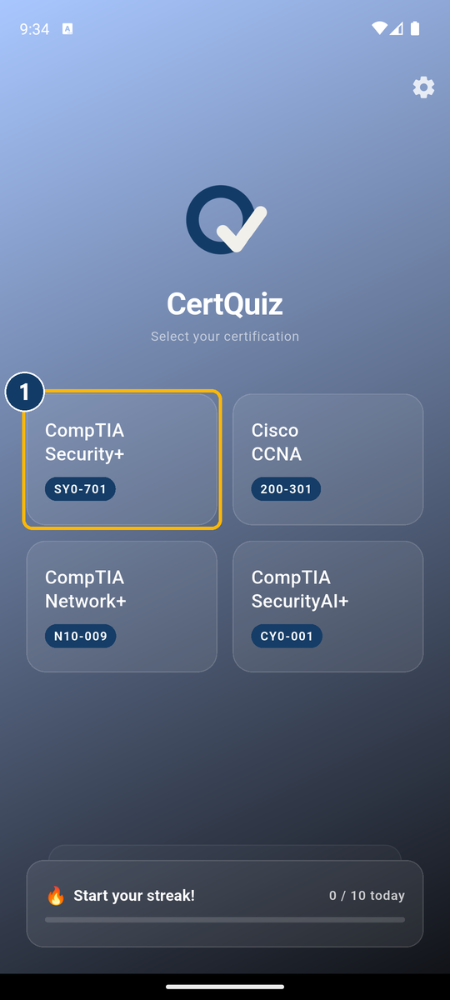
Open CertQuiz and tap the exam you're studying for. You can switch between certifications anytime from this home screen — your progress on each is tracked separately.
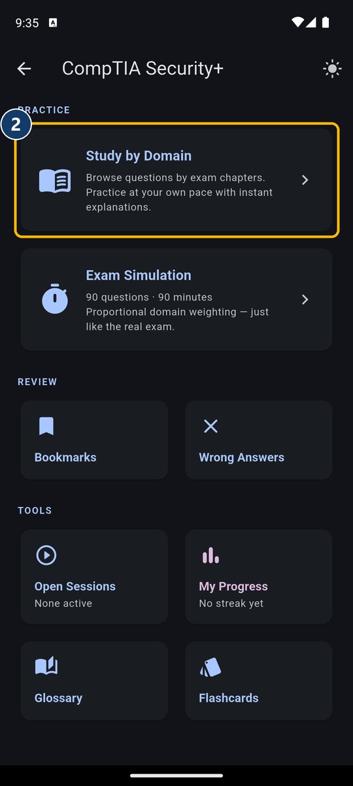
Study by Domain lets you work through the exam chapter by chapter at your own pace. When you're ready, Exam Simulation gives you a full timed test that mirrors the real thing.
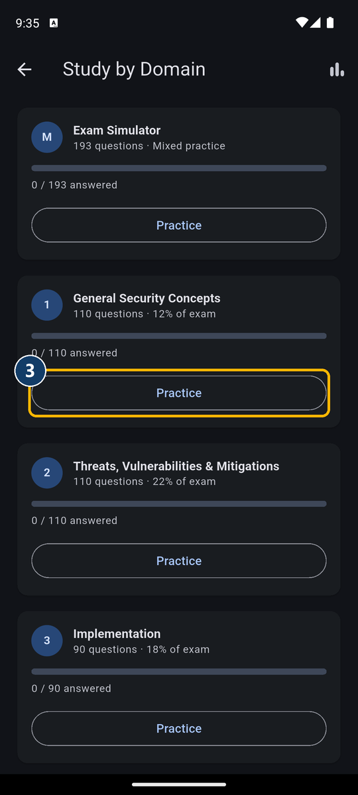
Inside Study by Domain, each exam objective gets its own card showing how many questions it has and how far you've gotten. Tap Practice to start.
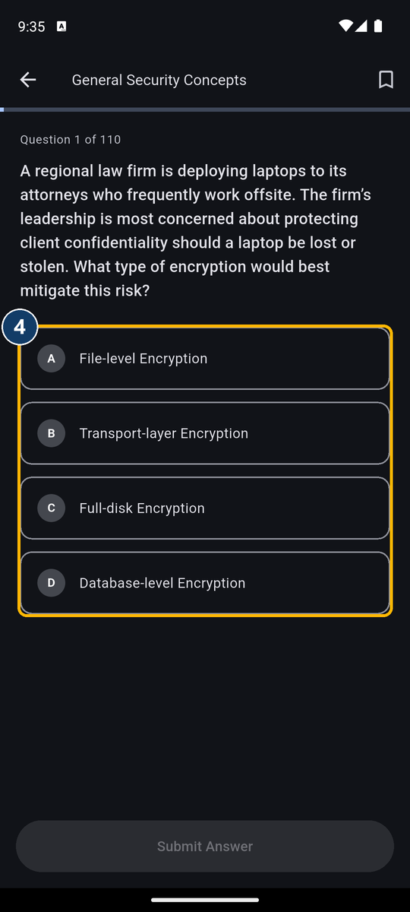
Read the scenario and tap the option you think is correct. Nothing is submitted until you confirm it — take your time.
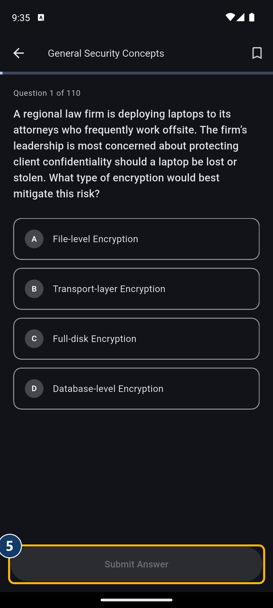
Tap Submit Answer to lock it in and see immediately whether you got it right.
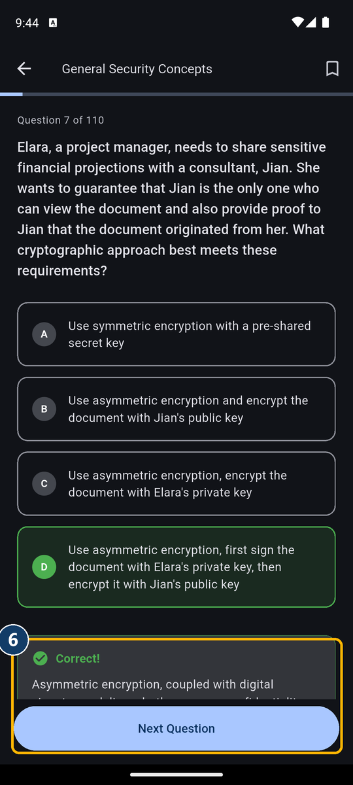
Every question comes with a full explanation — not just for the correct answer, but why the other options are wrong too. This is where the actual learning happens.
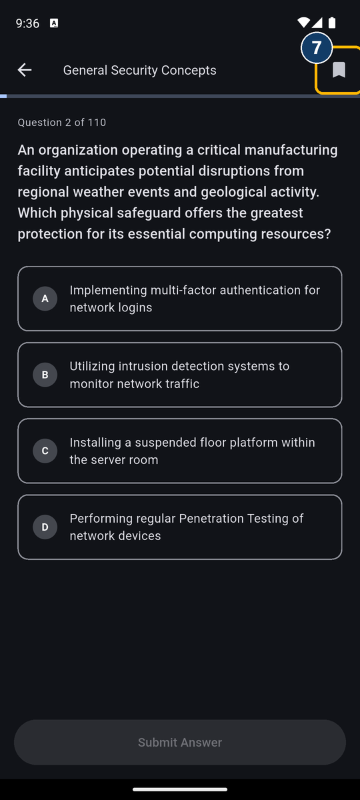
See a question you want to revisit? Tap the bookmark icon in the top-right corner, anytime — before or after answering.
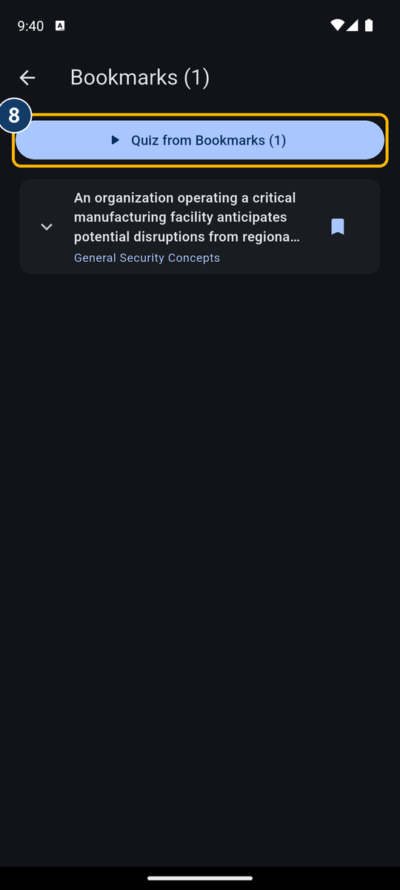
Every bookmarked question lives in one place (Review > Bookmarks on the mode select screen). Tap Quiz from Bookmarks to drill just those questions.
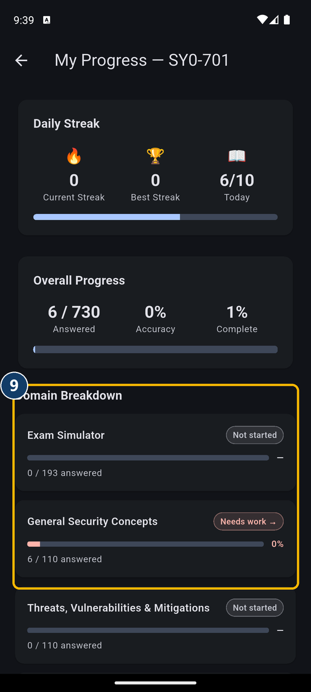
My Progress breaks your accuracy down by domain, so you always know exactly which topics need more work before exam day.
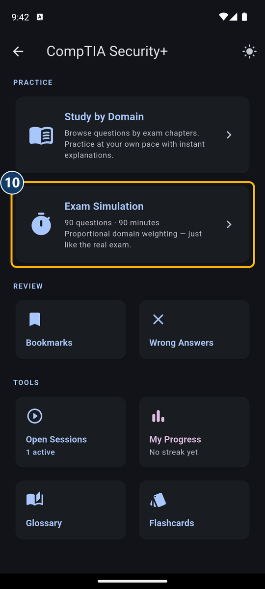
When you're ready, Exam Simulation pulls a full question set weighted exactly like the real exam blueprint, under a real countdown timer.
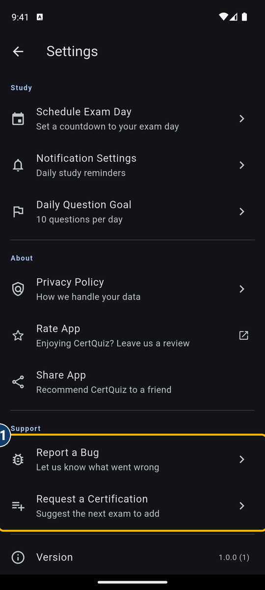
From Settings you can schedule your exam date, set a daily question goal, turn on study reminders — and if something's broken or you want to see a new certification added, Report a Bug and Request a Certification send us an email directly.